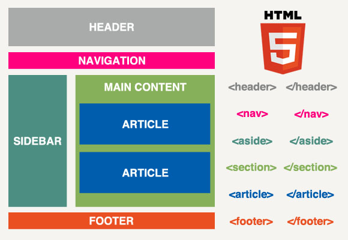

|
Página 6 - HTML SEMANTICO
Has entrado a la página 6 de Aleja :) - TEMA HTML SEMANTICO
Partes y ubicación adecuada página web
- Header o encabezado: está relacionado con los "H" que brindan la categoría del título y reflejan la temática de la página
- nav: Sección de la página que proporciona enlaces de navqagación dentro o fuera de la página
Header y Nav pueden o no estar juntas
- Artículo: espacio donde se ubican la o las secciones de la página o contenido principal
- Aside: otros artículos y demás elementos secundarios
- Footer: Pie de pagina, copiwrite, contacto, etc

Ir a la página 1